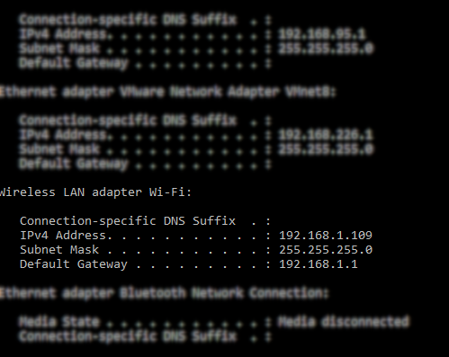

Welcome!
YTCast is successfully configured on a server side!
What to do now:


Find your local IP address.
For Windows users: use the ipconfig command, look for Wireless LAN adapter Wi-Fi line and copy your address below. (image 1)
For Linux users: use the ifconfig command, look for wifi0 line, and copy the local IP address below the wifi0 line. (image 2)
Go to 192.168.x.xxx/mobile on your device you want YouTube to be casted on. Replace all X's with appropriate numbers from your local IP address.
Click here to search for a video to be casted
When you click the video on your computer, you should be able to see it on your mobile device shortly!
Enjoy!